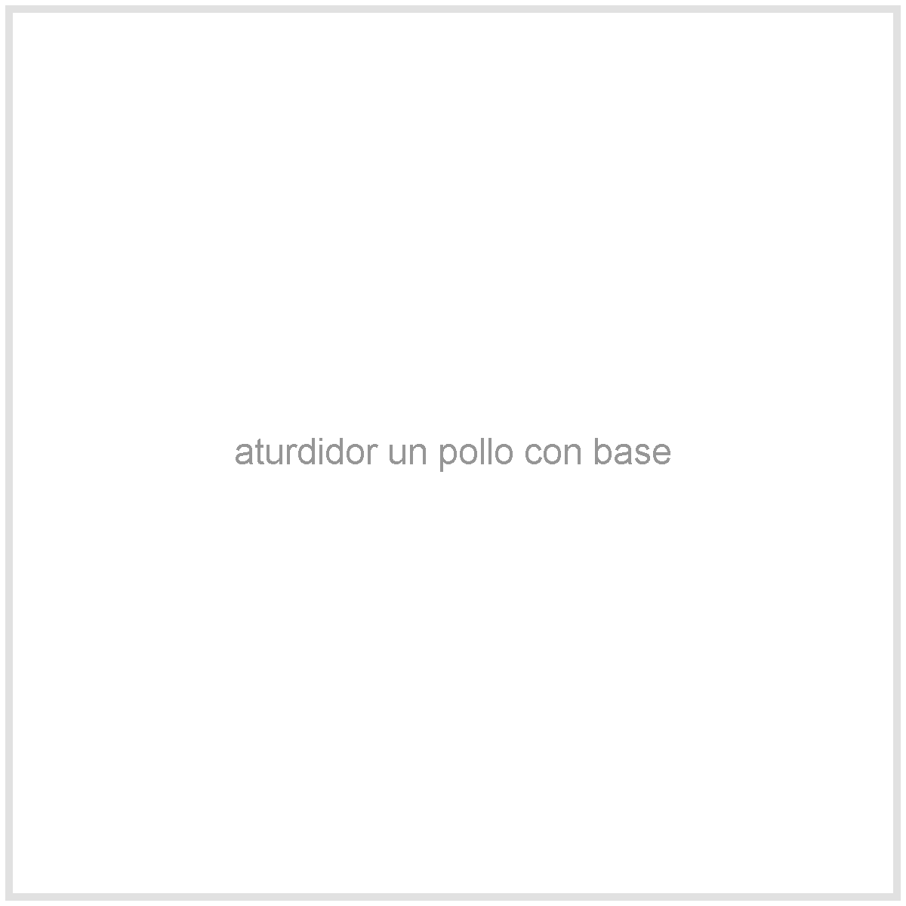
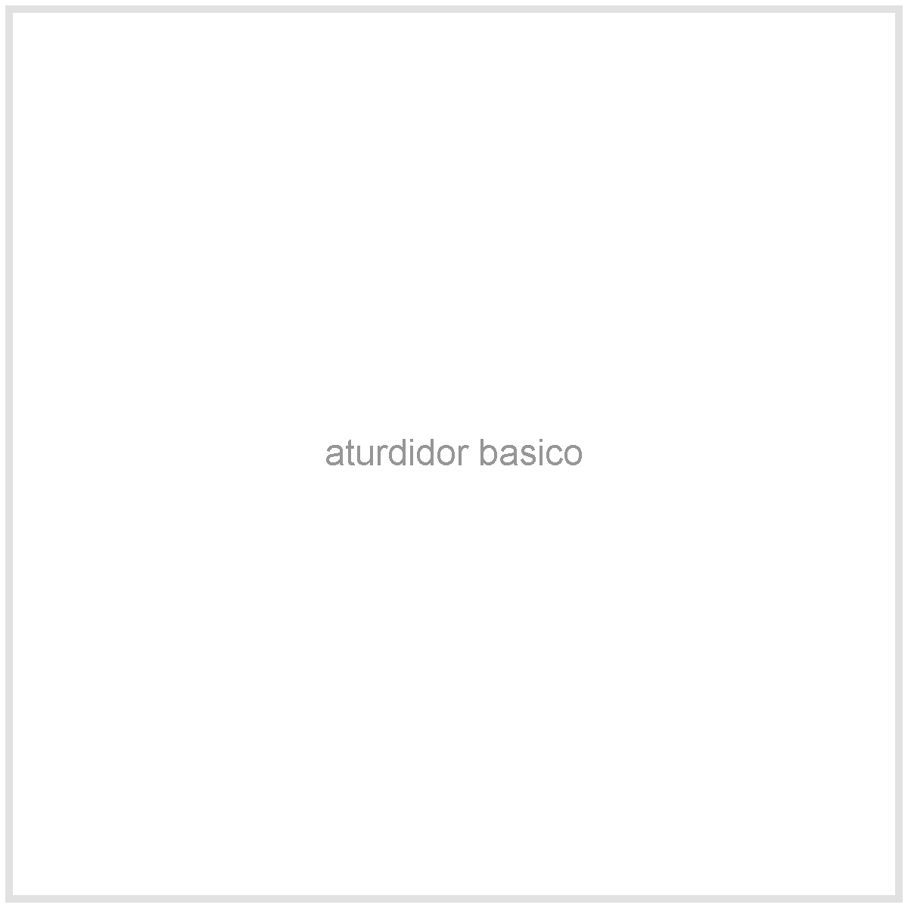
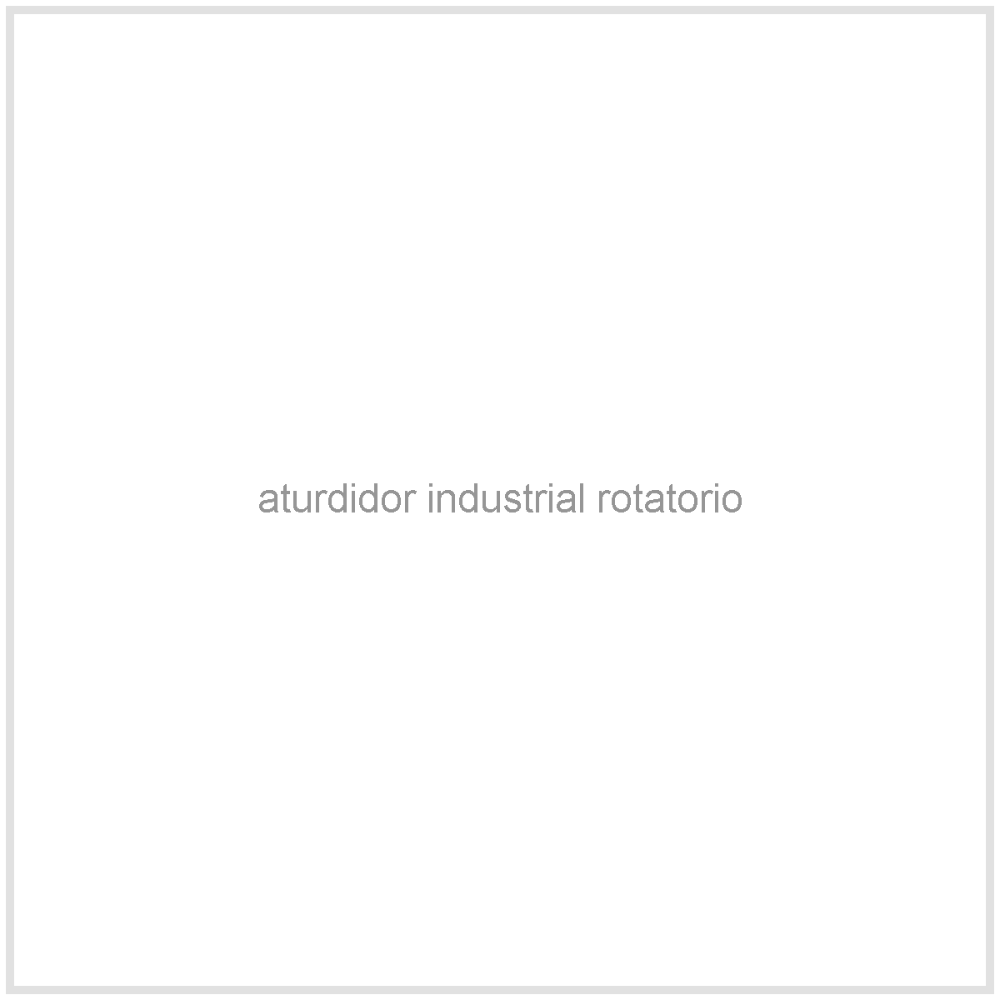
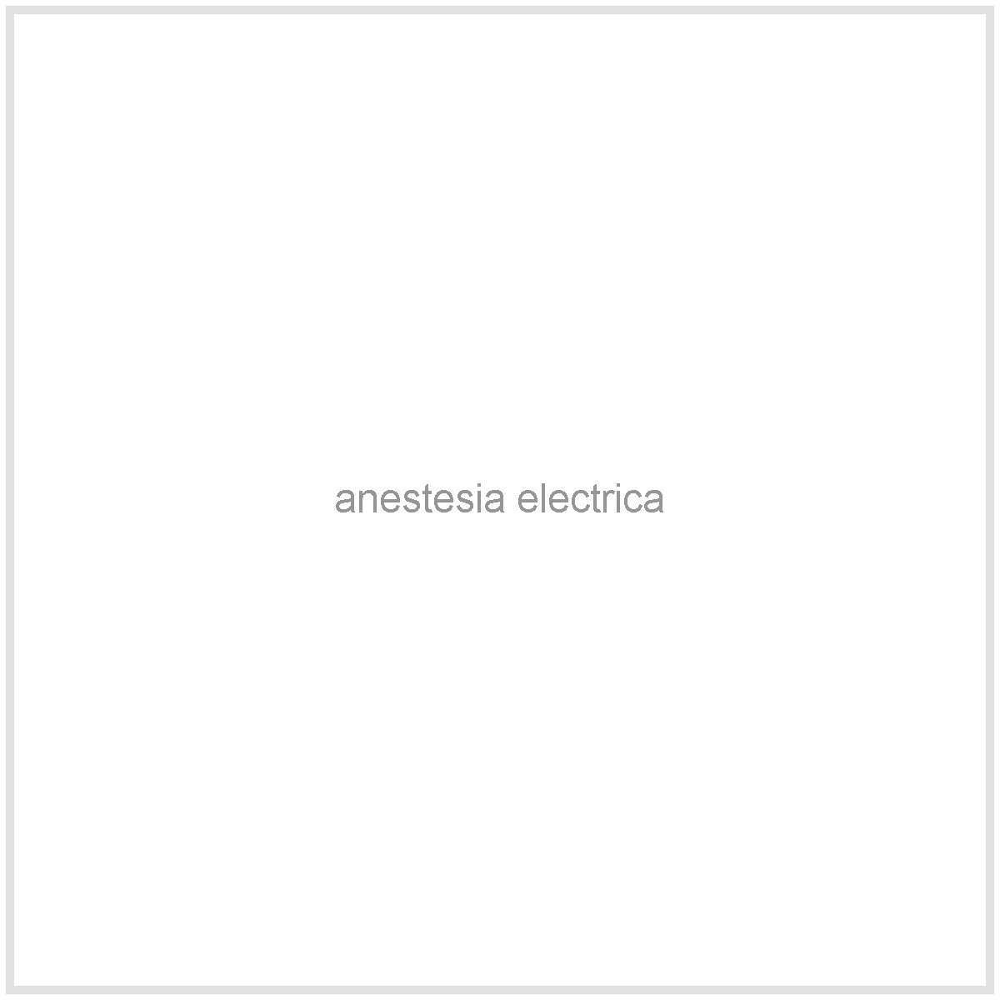
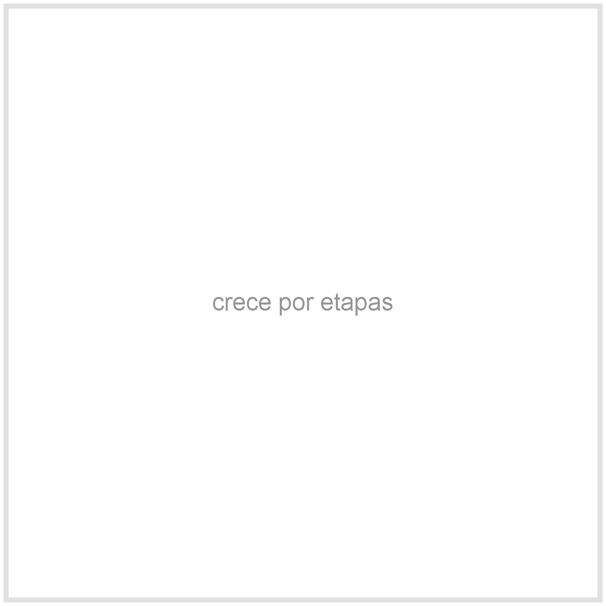
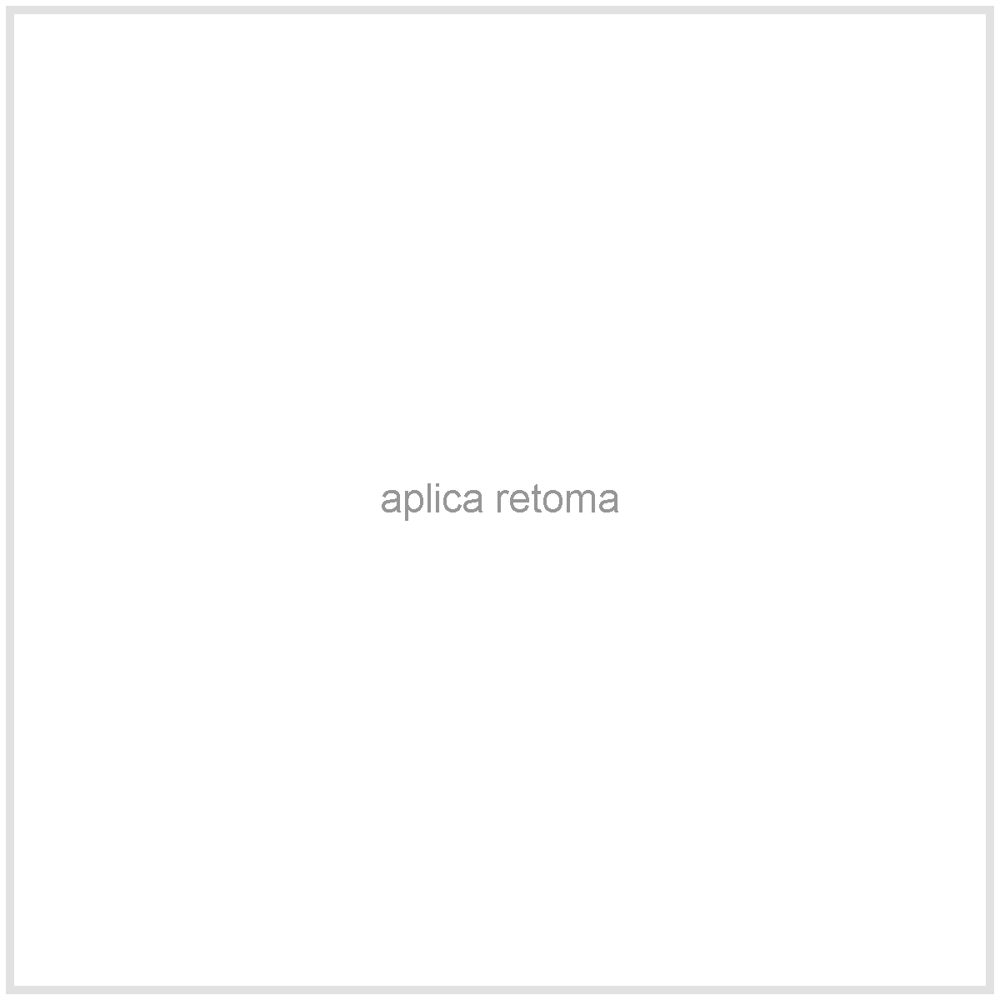

Orden antes del beneficio
Defines un punto claro para aplicar anestesia electrica y reducir improvisacion en el flujo.
Manejo antes del beneficio
Si tu produccion crece, puedes mejorar el manejo antes del beneficio con una solucion que empieza basica y puede avanzar hacia sistemas de mayor capacidad.



Elige y pide por WhatsApp
Selecciona version y cantidad. El resumen te muestra precio, promocion y envio antes de enviar el pedido.
Ficha tecnica por version
Tu primera compra debe tener sentido para tu volumen actual y para el crecimiento que viene.
Por que comprarlo



Defines un punto claro para aplicar anestesia electrica y reducir improvisacion en el flujo.
Puedes iniciar con una caja basica, subir a un pollo con base o pasar a industrial rotatorio.
Cuando tu produccion crece, el equipo puede aplicar a retoma despues de evaluacion tecnica.
“Con el aturdidor de un pollo el manejo antes del beneficio queda mas ordenado.”
“Empece con una version sencilla y ya estoy revisando como actualizar.”
“Me explicaron que version convenia segun mi volumen y presupuesto.”
Preguntas antes de comprar